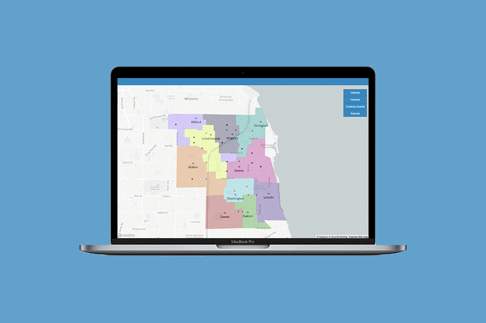
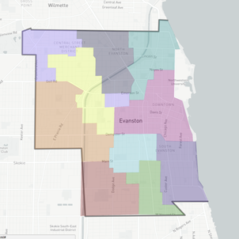
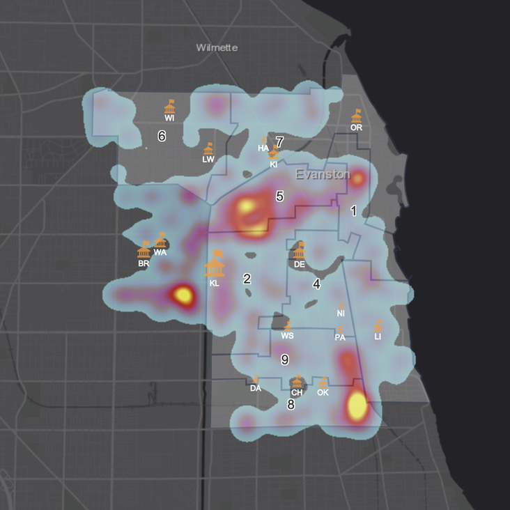

Northwestern University
Role: Undergrad Researcher, Front End Developer
When: September 2018 - January 2019
Teammates: Dipayan Banerjee
Outcome: An interactive interface for the District 65 school system to visualize options of optimization in bus routes in order to cut school budgets.

PROBLEM
The D65 elementary and middle school budget for buses was hundred of thousands of dollars larger than comparative school districts. The district wanted to cut their budget for buses in order to reallocate money for teachers to create smaller class sizers. D65 reached out to Professor Karen Smilowitz in the Industrial Engineering Department at Northwestern University to build a team to solve this problem.
RESEARCH
The first thing I did in the research process was visualize the school district using the data we were given from the district. The goal was to visualize the current district lines and corresponding bus stops.

From these maps, a major red flag was raised to the group. The purple box is the center of the map on the left is part of the school district in the upper left. Together they make up the Willard Elementary School. This island explained high bus costs and long bus routes and times for students. So we asked first big question, why does this island exist?
Through researching how the districts were created over 45 years ago, we found our unfortunate answer. The island contains a large demographic of low-income black students. The students are bused over two miles into a white neighbor in order to bring diversity in the school. This is a system known as busing, an extremely outdated practice. Through this we were able to reframe our project to focus on equity in education.
Next, we gathered data for the number of students using buses and their average travel time. The following heat map highlights the concentrated areas of where the majority of students are taking the bus as transportation to school. We see a high concretation of students taking the bus in the center- this aligns with the island seen in the district outline map.

From this maps, we were able to dive deeper to understand the disparity for a child who takes the bus to school versus one who does not. Students living in the "island" area spend an average of 73 minutes commuting to and from school each day.
DESIGN
Working with Industrial Engineers, we decided to reimagine the district lines in order to send students to the nearest school. Creating school districts based on demographics is no longer legal. Therefore the sole focus was to create equal class sizes with equal transportation. We faced constraints from parents and school, making this project all the more difficult.
The final product was an interactive interface for the district that visualizes the optimization models created by team members. The optimization models assign individual blocks in Evanston to a particular school based on the preferences set in the model. Through this interface, we hope the district can play with possible solutions and pitch different ideas to the board for improvement.
The website is private due FERPA regulations and now run by the district.
TAKEAWAYS
This project was my first time diving deep into data visualization. I got to explore different programs such as Mapbox and ArcGIS, and I learned a lot about different types of maps and what visualizes best to get an idea across. I gained a lot of physical hand-on skills working with these programs and learning from the expert librarians at Northwestern University.